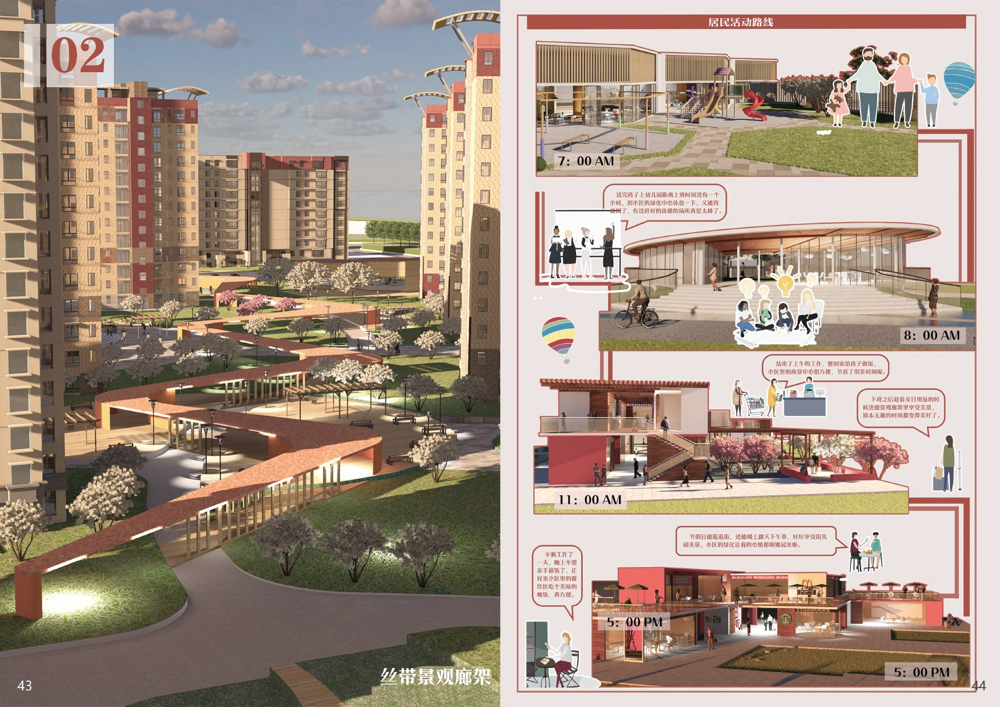

社区节点
把入口、转角和楼间空地转化为可识别的日常停留点，建立生活事件的起点。
Jean Zhu · Project 02 / 05
下一个项目 03 →Residential landscape · 2023
以“红顶记忆”为情绪线索，把住宅区的通行、停留与邻里交往，组织成一条连续的丝带式生活廊道。

01 / Spatial strategy
方案把分散的绿化节点、住区道路与共享活动面重新串联。线性的景观构件既是导向，也是座椅、遮荫、停留和儿童活动的空间边界。
把入口、转角和楼间空地转化为可识别的日常停留点，建立生活事件的起点。
以连续步行系统连接节点，同时回应消防、通勤和散步等不同移动速度。
让绿化、活动和视线关系形成一个可渗透的公共领域，而不是孤立的景观装饰。
A day in the neighborhood
把空间体验放回真实时间轴：早晨出发、上学通勤、午间采购、傍晚归家。相同的廊道在不同时段承担不同的社区角色。
清晰、直接的步行路径让居民快速进入社区主路。
高频交汇节点提供短暂停留，也降低不同人流的冲突。
休憩、采购与照看儿童在共享界面自然发生。
景观廊道从通行空间转换为社区傍晚的公共客厅。